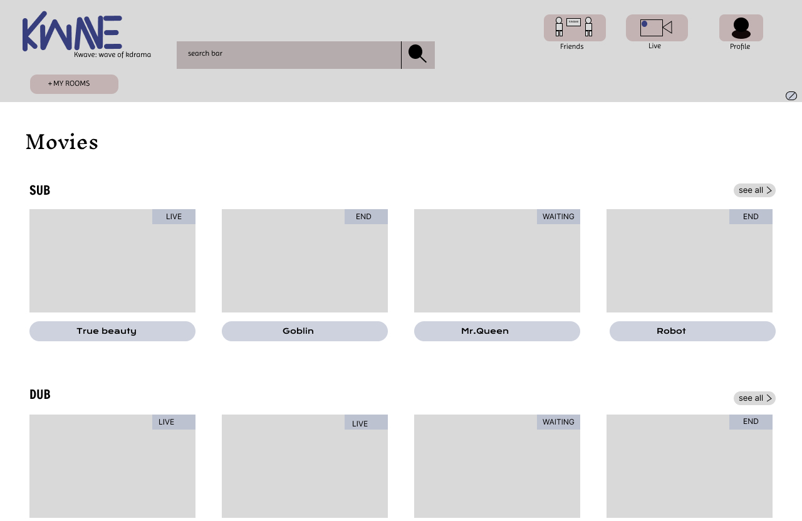

Instagram Clown
A Figma project that brings a whimsical touch to the Instagram experience. The design is tailored for Android large screen phones, featuring two key pages: Home and Profile.
In the Home Page, the initial half unveils posted stories represented by small circles. Users can horizontally scroll for more stories. Tapping the icon in the footer directs users to the Profile Page, revealing all videos and pictures. Explore the project here.


Kwave: Wave of Kdrama
A captivating Kdrama-focused website that also touches on K-pop. This platform aims to bring the kdrama community together, providing a hub for gossip, entertainment, news, updates, and more.
Utilizing the User-Centered Design Process, the website prioritizes user-friendly navigation. Explore the project here.
